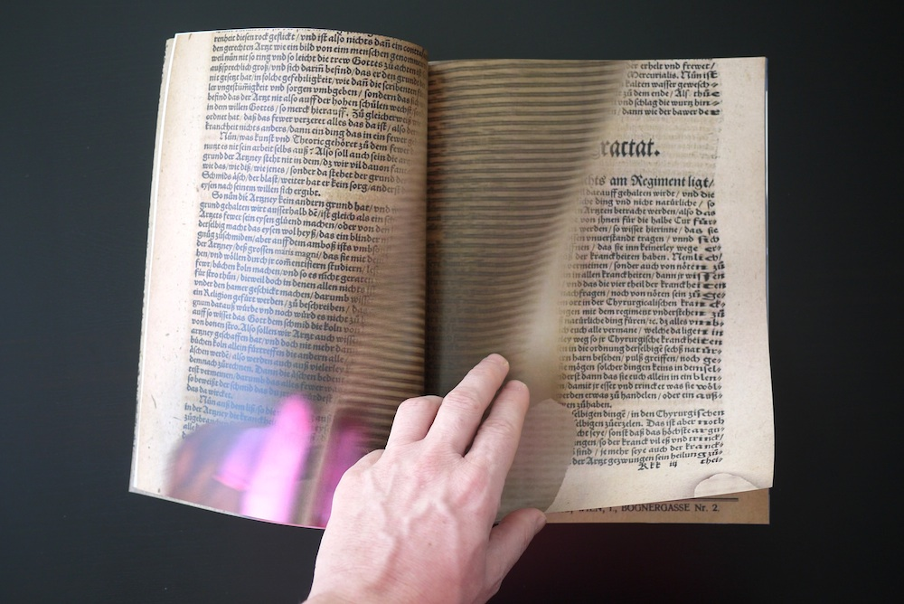
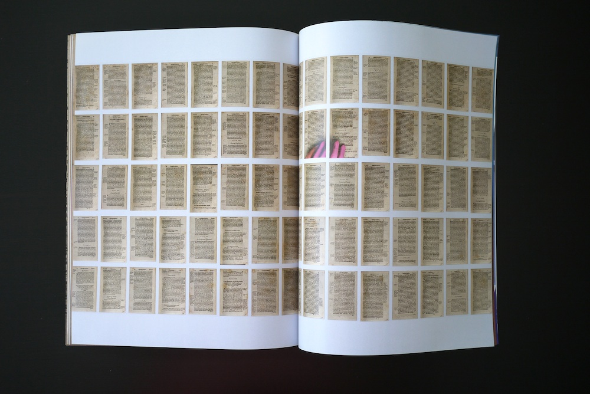
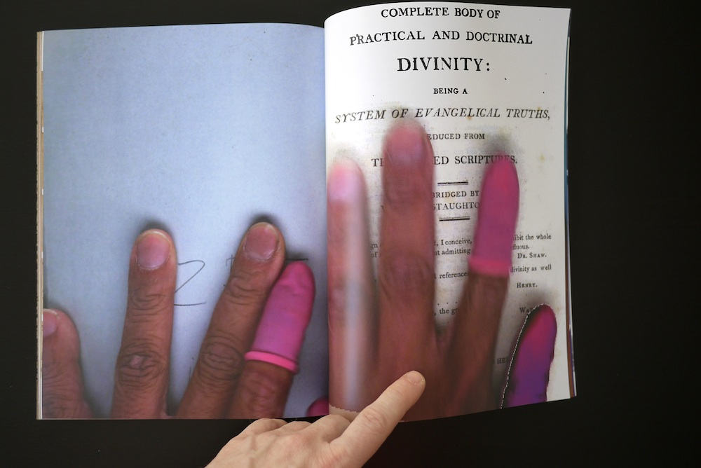
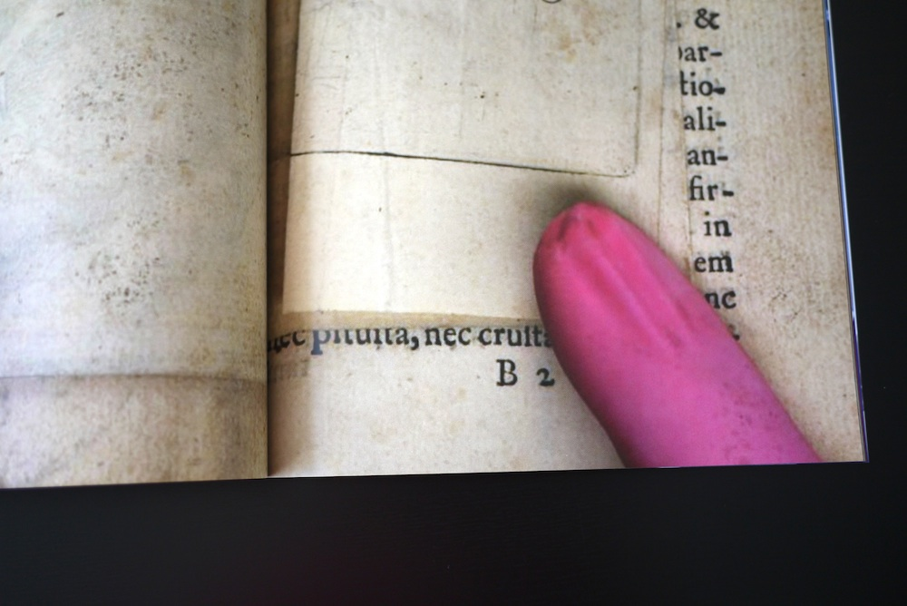

Apparition of a distance, however near it may be (2013)

Apparition of a distance, however near it may be is a collection of found images that reveal Google Books employees physically interacting with books inside the digital space of the book scanner. The collection is gathered into a 42-page print-on-demand publication.

As accidental recordings, the images mistakenly add human physicality, movement, and distortion to the experience of consuming static books in browsers. These anomalies are usually corrected or removed algorithmically, but sometimes errors remain, becoming spectral additions to the Google Books library and permanently altering the viewer’s perception of the content.

I search for these mistakes and work with them as found photography. They expose deviations in the algorithms hiding deep within the data.
“Apparition of a distance, however near it may be” is a reference to the discussion of aura in Walter Benjamin’s seminal essay, “The Work of Art in the Age of Mechanical Reproduction.” As a photographic work, Apparition makes visible the mechanical tactics behind the creation of the digital book image. The photographs, found by manually mining the vast Google Books data landscape, expose the human labor behind the creation of our new digital archives, techniques that are normally unseen and unknown. Details in Apparition ambiguously suggest race, gender, personal taste, and other identifying traits of the otherwise anonymous worker that are typically flattened or hidden behind digital production.
As a printed book work, Apparition of a distance, however near it may be proposes value in the extended translation of print to digital, and then back to print: a wider view of the book as an object that exists simultaneously in digital and physical realities.
8.5 in. x 11 in.
42 pages, self-cover
Perfect binding
Digital color print-on-demand
Open edition

Featured in Else Magazine 6